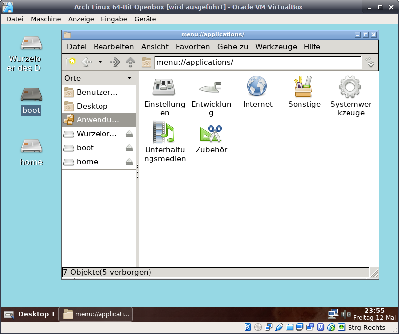

Custom Desktop Openbox
Sobald der Login Screen erscheint kann man sich mit
dem vorher angelegten Benutzer einloggen.
Man sollte es vermeiden mit dem root Benutzer zu arbeiten.
Für administrative Zwecke benutzt man den Befehl "sudo".
Um "openbox" und ein paar nützliche Tools zu installieren
gibt man folgenden Befehl ein:
openbox /-themes = Windows Manager /-themes
obconf/obmenu = Konfigurationsoberflächen
oblogout = Session Manager
xterm = Terminal
slim = Einfacher Login Manager
pcmanfm = Datei Manager
tint2 = Taskleiste
Mit dem Befehl:
aktiviert man den Login Manager beim Start.
kopiert die Konfigurationsdatein von openbox in das Homeverzeichnis. USERNAME = angelegter User.
dem vorher angelegten Benutzer einloggen.
Man sollte es vermeiden mit dem root Benutzer zu arbeiten.
Für administrative Zwecke benutzt man den Befehl "sudo".
Um "openbox" und ein paar nützliche Tools zu installieren
gibt man folgenden Befehl ein:
sudo pacman -S openbox openbox-themes oblogout obconf
obmenu pcmanfm slim tint2 xterm volumeicon
obmenu pcmanfm slim tint2 xterm volumeicon
openbox /-themes = Windows Manager /-themes
obconf/obmenu = Konfigurationsoberflächen
oblogout = Session Manager
xterm = Terminal
slim = Einfacher Login Manager
pcmanfm = Datei Manager
tint2 = Taskleiste
Mit dem Befehl:
sudo systemctl enable slim.service
aktiviert man den Login Manager beim Start.
mkdir /home/USERNAME/.config
und
cp -r /etc/xdg/openbox/ /home/USERNAME/.config
kopiert die Konfigurationsdatein von openbox in das Homeverzeichnis. USERNAME = angelegter User.
Mit dem Befehl
öffnet man mit dem Texteditor nano die Konfigurations-
datei des Autostartmenüs von openbox.
Hier kann man alles rauslöschen und folgende Zeilen eintragen:
pcmanfm --desktop &
tint2 &
nm-applet &
volumeicon &
Das kaufmännische UND (&) ist wichtig, da ansonsten eine
Zeile ausgeführt wird und dann stehen bleibt.
pcmanfm --desktop = Hintergrundbild & Icons anzeigen
tint2 = Taskbar starten
nm-applet = Netzwerksymbol im Systemtray
volumeicon = Lautstärkesymbol im Systemtray
evtl. wird man beim beenden um Bestätigung gefragt.
nano /home/USERNAME/.config/openbox/autostart
öffnet man mit dem Texteditor nano die Konfigurations-
datei des Autostartmenüs von openbox.
Hier kann man alles rauslöschen und folgende Zeilen eintragen:
pcmanfm --desktop &
tint2 &
nm-applet &
volumeicon &
Das kaufmännische UND (&) ist wichtig, da ansonsten eine
Zeile ausgeführt wird und dann stehen bleibt.
pcmanfm --desktop = Hintergrundbild & Icons anzeigen
tint2 = Taskbar starten
nm-applet = Netzwerksymbol im Systemtray
volumeicon = Lautstärkesymbol im Systemtray
strg + o = speichern
strg + x = beenden
evtl. wird man beim beenden um Bestätigung gefragt.
Nach einem Neustart sollte der Login Manager erscheinen.
Hier wieder mit dem
Benutzernamen und dem Kennwort anmelden.
Hier wieder mit dem
Benutzernamen und dem Kennwort anmelden.
Und anschließend ist man auf einem grauen Desktop.
Nun muss dieser eingerichtet werden um gut auszuschauen.
Im ersten Schritt aktiviere ich Desktopsymbole und ändere
die Farbe des Hintergrunds.
Man kann auch hier schon ein Hintergrundbild einstellen.
Dazu einfach mit der rechten Maustaste auf den Desktop
klicken um in das Einstellungsmenü zu gelangen.
Nun muss dieser eingerichtet werden um gut auszuschauen.
Im ersten Schritt aktiviere ich Desktopsymbole und ändere
die Farbe des Hintergrunds.
Man kann auch hier schon ein Hintergrundbild einstellen.
Dazu einfach mit der rechten Maustaste auf den Desktop
klicken um in das Einstellungsmenü zu gelangen.

Hat man die Desktopsymbole aktiviert und öffnet eines,
ist man im Dateimanager pcmanfm.
In diesen gibt es ein Anwengungsmenü, welches alle
installierten Anwendungen anzeigt.
Fortsetzung folgt...............
ist man im Dateimanager pcmanfm.
In diesen gibt es ein Anwengungsmenü, welches alle
installierten Anwendungen anzeigt.
Fortsetzung folgt...............